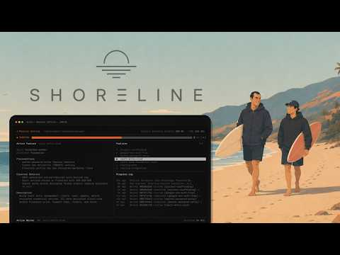

Codex
OpenAI's coding agent across CLI, cloud, and mobile — the voice-mode build loop in Episode 4 runs on it.
Open Codex docsThe harness is not a neutral wrapper. Interface, permissions, context handling, and the review loop shape what a model actually produces. This guide collects the show's running comparison of coding agents and harnesses, the best timestamps, and the scorecard for testing them on your own work.
Tool comparison on Shoreline means one thing: give Codex, Claude Code, Cursor, and any routing layer the same real job, then score what comes back. The hosts' core claim — "the harness changes the model" — is that output quality comes from the whole system around the model: how it gathers context, what it is allowed to execute, how it shows its work, and how cheap the result is to review and trust.
The comparison runs through the whole season. Episode 1 traces the aha-moment arc from Replit Agent to Cursor to Claude Code. Episode 2 places the harnesses inside the agent layer between frontier models and business systems. Episode 3 is the head-to-head — model-native harnesses versus model-agnostic editors, and the Tesla analogy for why model builders may design the best interfaces for their own models. Episode 4 adds the newest surface: Codex Mobile in voice mode, building software from a phone between gym sets.
 Token Maxing and the Company Brain Era
The head-to-head
39:35
Ep. 4
Token Maxing and the Company Brain Era
The head-to-head
39:35
Ep. 4

The Expert's Moat and the Beginner's Mind Voice-mode building 1:02:09 Ep. 2 AI Workflow Automation for Sales, Prospecting, and Productivity
The agent layer
43:44
Ep. 1
AI Workflow Automation for Sales, Prospecting, and Productivity
The agent layer
43:44
Ep. 1
 AI Agents and Knowledge Management: Building a Company Brain
The aha moment
1:25:51
AI Agents and Knowledge Management: Building a Company Brain
The aha moment
1:25:51
OpenAI's coding agent across CLI, cloud, and mobile — the voice-mode build loop in Episode 4 runs on it.
Open Codex docsAnthropic's harness for long-running development tasks, and the model-native pole of the Episode 3 comparison.
Open Claude Code docsThe model-agnostic editor in the comparison — cited as the more efficient surface when you step back from raw frontier spend.
Open Cursor docsThe first big aha moment in Episode 1: prompt to working app in the browser, before the heavier harnesses took over.
Open Replit Agent docsThe routing layer that turns tool choice into a per-task decision instead of a single-vendor commitment.
Open OpenRouter docsThe local option in the lineup: open models on your own hardware for private, offline, or high-volume work.
Open OllamaEpisode 3's Tesla analogy says the lab that builds the model can build the best interface for it. The counterargument is flexibility: an editor that routes to any model never gets locked into one lab's weaknesses.
Model, harness, or context? The show keeps finding that the same model produces different work in different harnesses — which makes clean comparisons hard and vibes-based tool takes mostly useless.
Episode 3's scorecard ends on trust: total cost is tokens plus the human review burden. A harness that produces work you can verify quickly may beat a smarter one you can't.
Voice-mode building in Episode 4 collapses the distance between feeling friction and shipping the fix. If the best interface is the one you have at the gym, desktop-first harnesses have a new problem.
The harness changes the model. Codex, Claude Code, Cursor, and routing layers are not neutral wrappers — the interface, permissions, context, and review loop shape the result.
Shoreline Ep. 3 · key takeaway